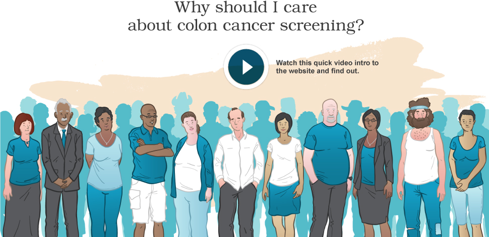

National Cancer Institute
www.cancer.gov
at the National Institutes of Health
gut*check
translating Colon Cancer Screening
Tweet

Colon Cancer Screening Choices
Compare the Choices That Work
View the:
least invasive
longest lasting
most private
That Work
Home Stool Test
Flexible Sigmoidoscopy
Colonoscopy
That Don't Work
Waiting for Symptoms
That Are Being Studied
Virtual Colonoscopy